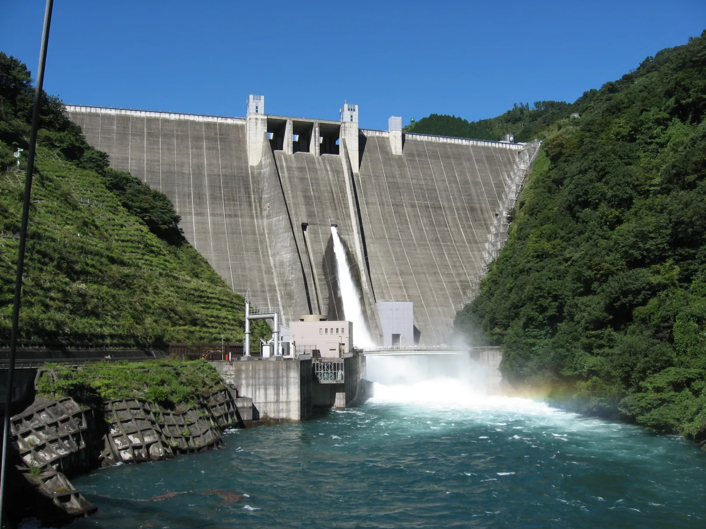
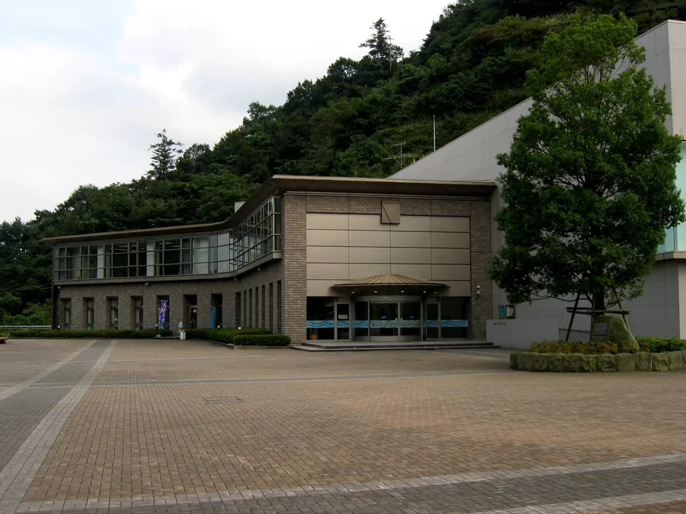
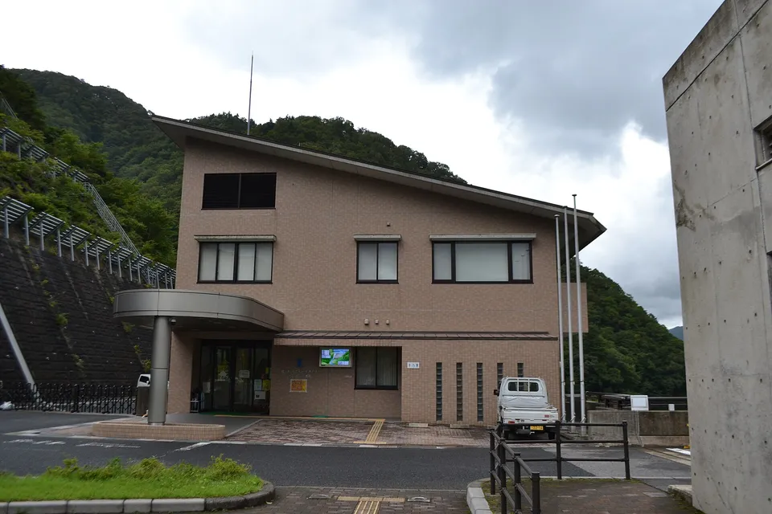
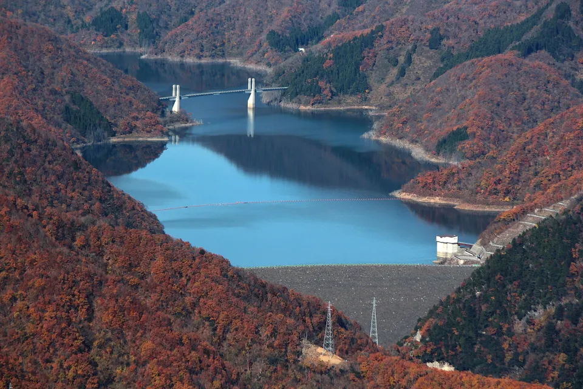
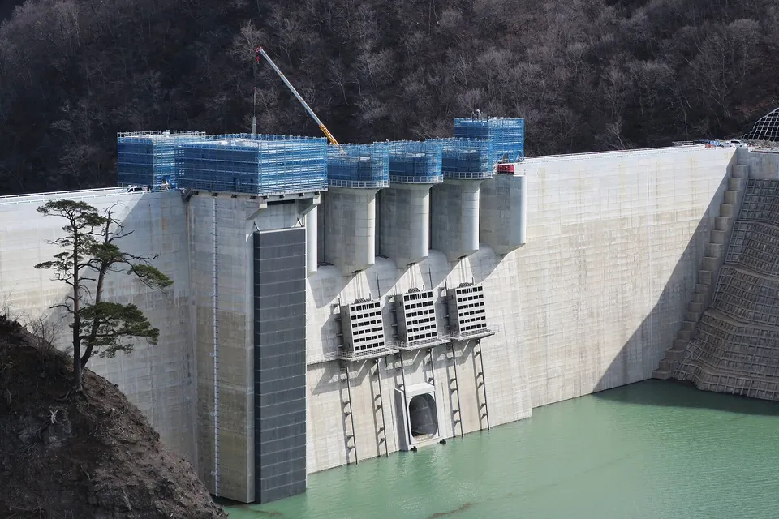
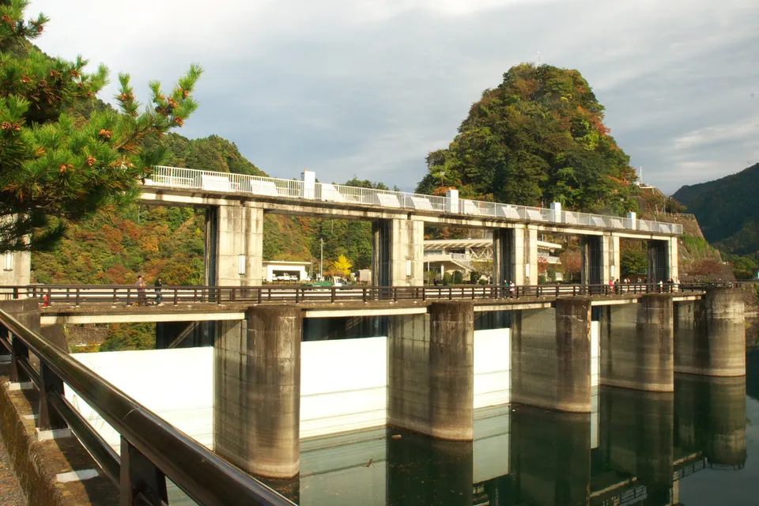

Dam cards: Japan's 832 free cards, counted prefecture by prefecture
A dam card (ダムカード) is a free collectible card that Japan's dams hand to the people who visit them: a photo of the dam on the front, its engineering on the back. The Ministry of Land, Infrastructure, Transport and Tourism (MLIT) started the series in 2007. Most English pages stop at "there are hundreds". We counted the ministry's own distribution list instead. As of its latest edition, dated 16 January 2026, it has 832 entries, and every one of Japan's 47 prefectures has at least two. Below: how to get a card, the rules that catch first-timers out, the full count by prefecture, and the easiest cards to reach from Tokyo.

What a dam card is
MLIT's dam card page puts it simply: the front is a photograph of the dam, and the back packs in its type, the capacity of its reservoir and the construction techniques used to build it, "from the basics to slightly geeky details". The ministry says it has made the cards since 2007 (Heisei 19) and gives them to people who visit the dams. The common design covers dams at least 15 metres high, from foundation to crest, built for flood control or water supply, plus MLIT-run water-resource facilities such as reservoirs and aqueducts.

The cards are made by whoever runs the dam: MLIT's regional bureaus, the Japan Water Agency, prefectures, and some power companies and municipalities. That is why the same national design turns up at a remote mountain dam and at a city water-supply reservoir.
Our guide to Japan's other free collectible cards quotes a collectors' catalogue listing 993 dam card types. The two figures measure different things. The 832 here counts entries in MLIT's official list: roughly one per dam or facility. Collectors also count reissued designs, special editions and older cards that use a different, non-unified design, which MLIT lists separately and stopped updating in 2016.
How to get one: the rules
MLIT's rule is short: in principle, one card per person, given to visitors to the dam. Methods vary by dam, and the ministry tells you to check each dam's own page. In practice, its distribution list adds three things worth knowing before you set off.


Photos: Tokuyama Dam's management office in Gifu, where its card is handed out — 先従隗始, CC0, via Wikimedia Commons · Tokuyama Dam and its reservoir from Mount Hanabusa — Alpsdake, CC BY-SA 3.0, via Wikimedia Commons
- You may need to prove you went. 170 of the 832 entries mention proof of your visit (証明), usually a photo of the dam on your phone. This matters most where the card is handed out somewhere other than the dam itself: a roadside station, a shop or a museum in town. 48 entries warn outright that the distribution point is away from the dam.
- Some offices are weekdays only. Many cards come from the dam's management office, and some of those offices close at weekends. Miyagase Dam in Kanagawa is a typical case: its management office hands out cards only on weekdays, while the visitor building at the dam does weekends but closes on Mondays. Read the hours line for your dam, not just the address.
- Winter and pauses. 31 entries say the card is not available for part of the winter, mostly mountain dams whose roads or facilities close. 11 entries mention that distribution is paused (休止), sometimes with an alternative place listed.
MLIT itself adds that a dam on the list may still be unable to hand out cards on a given day, and that contacting it in advance is the safest course. Nothing on its page mentions a charge for the card.
All 832, by prefecture
Counted from MLIT's distribution list of 16 January 2026. A handful of dams sit on a prefectural border and are listed under two prefectures, so the columns add up to slightly more than 832.

| Prefecture | Cards | Prefecture | Cards | Prefecture | Cards |
|---|---|---|---|---|---|
| Hokkaido北海道 | 49 | Nagasaki長崎県 | 37 | Niigata新潟県 | 33 |
| Nagano長野県 | 32 | Miyazaki宮崎県 | 31 | Gunma群馬県 | 29 |
| Hyogo兵庫県 | 29 | Kochi高知県 | 28 | Fukushima福島県 | 26 |
| Okinawa沖縄県 | 25 | Fukuoka福岡県 | 24 | Toyama富山県 | 24 |
| Yamaguchi山口県 | 24 | Tochigi栃木県 | 21 | Mie三重県 | 20 |
| Yamagata山形県 | 20 | Akita秋田県 | 19 | Gifu岐阜県 | 19 |
| Hiroshima広島県 | 19 | Oita大分県 | 19 | Kagawa香川県 | 18 |
| Kumamoto熊本県 | 17 | Okayama岡山県 | 17 | Saga佐賀県 | 17 |
| Fukui福井県 | 16 | Iwate岩手県 | 16 | Nara奈良県 | 16 |
| Shimane島根県 | 15 | Ehime愛媛県 | 14 | Tokushima徳島県 | 14 |
| Aichi愛知県 | 13 | Shizuoka静岡県 | 13 | Aomori青森県 | 12 |
| Ishikawa石川県 | 12 | Saitama埼玉県 | 12 | Chiba千葉県 | 11 |
| Ibaraki茨城県 | 10 | Kanagawa神奈川県 | 8 | Miyagi宮城県 | 8 |
| Shiga滋賀県 | 8 | Wakayama和歌山県 | 8 | Yamanashi山梨県 | 8 |
| Kagoshima鹿児島県 | 7 | Tottori鳥取県 | 7 | Kyoto京都府 | 5 |
| Osaka大阪府 | 4 | Tokyo東京都 | 2 |
Three things stand out. Hokkaido leads with 49, which is no surprise. Nagasaki comes second with 37, ahead of big mountain prefectures like Niigata and Nagano. At the other end, Tokyo has only two: Ogōchi Dam, which holds back Lake Okutama, and the small Shiromaru dam below it. Osaka has four and Kyoto five.
The list also records a version number for each card. More than 260 entries are on version 2 or later, which means the design has been reissued at least once. A dam you visited years ago may now hand out a different card.
The easiest cards from Tokyo
Hours below are copied from MLIT's January 2026 list. Check the dam's own page before you go.

| Dam | Where the card is handed out | Hours in the list |
|---|---|---|
| Ogōchi Dam, Tokyo小河内ダム | ① The observation tower at the dam ② Okutama Water and Green Interaction Hall | ① 10:00–16:00 (to 17:00 from 20 July to 31 August), closed over New Year ② 9:30–17:00, closed Wednesdays and over New Year |
| Miyagase Dam, Kanagawa宮ヶ瀬ダム | ① Sagami River dam management office ② Miyagase Dam Water and Energy Hall | ① 8:30–17:15, weekdays only ② April–November 9:00–17:00, December–March 10:00–16:00, closed Mondays |
| Yanba Dam, Gunma八ッ場ダム | ① Naruhodo! Yanba museum, plus six shops and roadside stations nearby | ① 9:00–16:30, closed over New Year. At the other six places, the list says you need proof you visited the dam |
| Tokuyama Dam, Gifu徳山ダム | Tokuyama Dam management office | 9:00–17:00, weekends and holidays included. Far from Tokyo, but an example of an office that does open every day |
Ogōchi is the obvious first card. Take the train to Okutama station and a local bus on to the lake; check current timetables before you go. Pair it with our crowd-free day trips from Tokyo. For a two-card day in Kanagawa, the Sagami River system has several dams whose cards come from the same offices; the list routes Sagami, Shiroyama and Dōshi dams through the Sagami River dam management office.
Keeping them
Collectors keep dam cards the way they keep manhole cards: in clear card sleeves, in a pocket binder, sorted by region or by river system. The official list is arranged by river system, so sorting that way lets you see at a glance which dams on the same river you still need. Dam cards are 63 × 88 mm, the standard trading-card size, so Pokémon-size storage fits them; our card binder guide compares binders and sleeves.
All 832 dam cards would fill about three 360-card binders. Both binders below are sold for standard-size cards with side-loading pockets; avoid "Japanese size" storage, which is for smaller Yu-Gi-Oh cards. Full comparison in our binder guide.
These are affiliate links (Amazon). We may earn a small commission at no extra cost to you, and it never changes what we recommend. As an Amazon Associate, NihongoHub earns from qualifying purchases.
Dam cards started a whole genre. Manhole cards → are the other big series; Japan's other free collectible cards → covers rice-terrace, erosion-control and observatory cards; and if you collect paper rather than cards, station stamps → work the same way, one visit, one keepsake.
The Japanese you'll actually use
| Japanese | Reading | Meaning |
|---|---|---|
| ダムカード | damu kādo | dam card |
| ダムカードはありますか？ | damu kādo wa arimasu ka? | Do you have dam cards here? |
| 管理事務所 / 管理所 | kanri jimusho / kanrisho | the dam's management office |
| 配布場所 | haifu basho | where it is handed out |
| 配布時間 | haifu jikan | hours it is handed out |
| 土・日・祝日 | do, nichi, shukujitsu | Saturdays, Sundays and holidays |
| 配布休止 | haifu kyūshi | distribution paused |
| 証明（写真） | shōmei (shashin) | proof (a photo) that you visited |
| 1人1枚 | hitori ichimai | one per person |
Want these to stick? The free JLPT battle quiz drills travel vocabulary like this with spaced repetition.
Common questions
Q. How many dam cards are there?
A. MLIT's official distribution list dated 16 January 2026 has 832 entries, covering all 47 prefectures. Collectors' catalogues give higher totals because they also count reissued designs and older cards in a different design.
Q. How do I get a dam card?
A. Visit the dam and ask at the place the official list names, usually the management office or a visitor building. The rule is one card per person for visitors. Where the card is handed out away from the dam, you may be asked for proof of your visit, such as a photo.
Q. Are dam cards free?
A. They are handed to visitors, and MLIT's page mentions no charge.
Q. Can I get dam cards at weekends?
A. At many dams, yes, but not all. Some management offices hand out cards only on weekdays; at Miyagase Dam, for example, the office is weekdays only while the visitor building covers weekends. Check the hours line for your dam.
Q. Where can I get a dam card in Tokyo?
A. Tokyo has two dams on the list. Ogōchi Dam's card is handed out at the dam's observation tower and at the Okutama Water and Green Interaction Hall.
Q. Which prefecture has the most dam cards?
A. Hokkaido, with 49 entries, followed by Nagasaki with 37 and Niigata with 33.